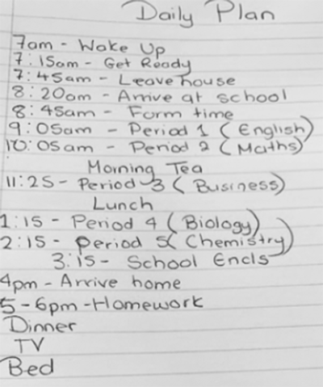
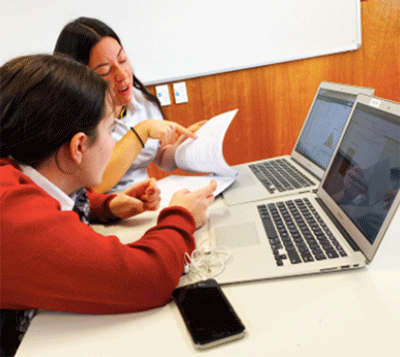
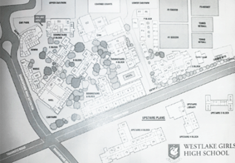

Ways to Settle into High School
It is important that during high school as it is a big transition from Intermediate that there are ways to help students settle in better to high school and for this page I will be recommending some general tips to settle into high school better and also some tips I found helped me to settle into high school from my own personal experience. The general ways to settle into high school include:
Getting familiar with where your classes are in the school. This will make you feel less stressed trying to find you class every lesson.
Get to know your teachers. It is really important for students that as starting at a new school can be stressful but getting to know your teachers for your subjects can help you settle in easier at high school as it will be a less stressful time for the students.
Make friends in your class. This one is really important because having people around you who can help you during the first sages of high school will make the transition easier for students in high school.
Read the handout that your school has on guidelines and rules that apply to the school. All school rules vary depending on the school and coming to a new school they will certainly have different rules to what you had at intermediate and its important that you learn the school rules as quick as possible because this will make the experience much more enjoyable knowing that you know the school rules and what is expected of you at the school.
Do your homework. It's really important to make the adjustment easier for students and not feel as stressed that students do their work on time and keep up with the homework and deadlines that you have. If students don't keep up with homework and work load then it can become a stressful time adjusting to the new school which does not help students make the transition easier, which is why it is important to keep up with the homework and workload that students have to make it a much easier adjustment to high school.
When I started high school I found it was a very stressful time for myself because I felt I was walking into the unexpected and I didnt know what to expect going into high school and how I would handle all that came with being at high school, because I didn't know what to expect or how to handle certain things at high school I found it much harder to settle in to the new adjustments which is why I find it so important to include a section on reflection on personal experiences and what I found out during my time at high school that helped me make the transition easier.
Joining extra curricular activities. A common thing that when I was speaking to my stakeholders that helped them adjust into high school was joining an extracurricular activity such as a sport. Joining an activity involved in the school will allow for the students to meet you people and make new friends but also have a sense of belonging in the school which I felt when I joined Netball in year 9, I met some amazing people who are still my best friends to this day and it made being at high school a much more positive experience and helped me settle in easier to high school.
Do what you teacher says. I found this really important coming into high school that when I followed the instructions that the teacher told me it made it much easier to settle into high school because a positive impression on your teacher will make for a positive adjustment to a new school as you are going to have that teacher for the whole year for that subject.
Talking to students who are older than you that are able to help you get used to school. For me when I started high school we had prefects who came into our class who were year 13 students and helped us get used to the school and what is expected of the students. This helped me settle in easier because I was able to ask the older students for advice on starting my high school journey.
Setting up a weekly planner. I found this really important when coming to high school and making the transition easier way to set up a weekly planner which included all the subjects I had during that week, the sports I had, trainings etc. This helped me manage my time better and I felt less stressed knowing that I had a plan in place for the week and for students coming into high school it is important that you are organised to ensure that you don't get overwhelmed by the workload and change in a new school and I found that having a weekly planner really helped with that.


